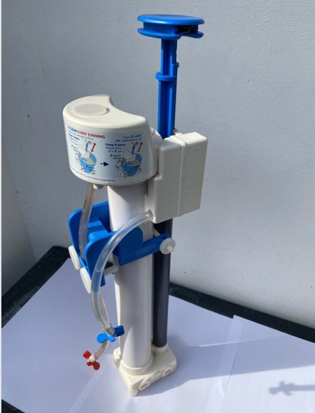
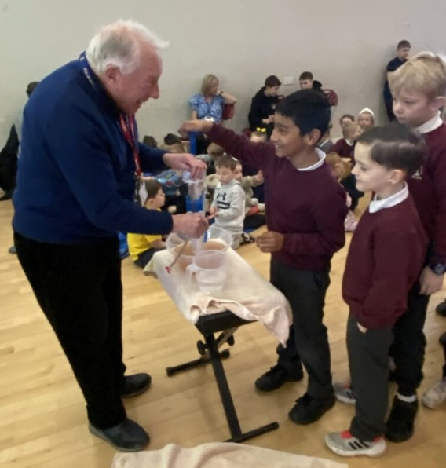

Aquabox at Annbank Primary School
Aquabox, supported by Ayr Rotary Club, is a UK charity family and community providing water filters distributed around the world to countries suffering from natural and man-made disasters, providing safe drinking water to hundreds of thousands of people.
Aquabox is almost entirely a volunteer-led organisation, with one part-time paid administrator, so the proportion of total donations contributing directly to aid boxes is amongst the highest achievable.
In these circumstances, people have no choice but to collect water from available local sources, such as streams, rivers and wells. Such water is often contaminated and unsafe to drink. Water-borne diseases such as cholera will spread rapidly, and will affect particularly the more vulnerable young and older members of a community.

Two solutions are provided, depending on the local need. The first is the Aquabox family filter, capable of filtering water at the rate of one litre per minute, and designed to meet the needs of a typical family group. The second is a community filter - exactly the same technology, but scaled up to process up to six litres per minute, and designed for schools, clinics and community centres.
Both the Aquabox filters are based on sub-micron filter membranes which are impenetrable to bacteria and most viruses, and which instantly produce safe, clean water for drinking, for cooking and for washing. And with a quick, simple daily back-flush process to get rid of accumulated contamination, they go on working - day after day, month after month, year after year.
Annbank Primary School were approached by Ayr Rotary Club for the pupils to copy the many, many steps taken by children in African countries just to secure clean drinking water. Pupils were then asked to bring their "pennies" to deposit into a bucket after walking around their playground to help buy an Aquabox filter costing £35. Poor weather inhibited the playground walk, but the assembly hall was a fitting substitute.

Over 250 children packed the Friday morning assembly, eagerly anticipating a demonstration of the pump, producing clean water from the dull, murky water in a glass, on display. Then in a uniformed line, the children approached the stage clutching, then dispensing their "pennies", keen to press the pump handle to achieve clean, sparkling drinkable water.
The following week, Head Teacher, Karen Butcher announced the results of the count from the morning. An amazing £176.66 was raised, enabling the purchase of five (5) pumps.
Ayr Rotary Club and Aquabox are most grateful to the pupils and teaching staff of Annbank Primary School for their generosity.
Share this: